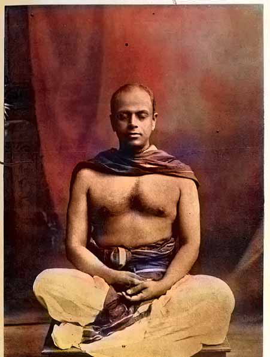
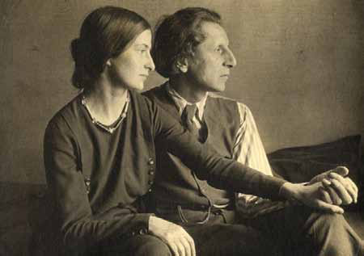
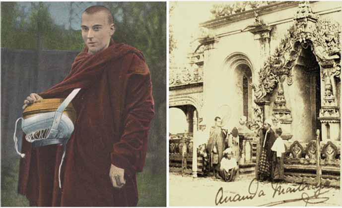
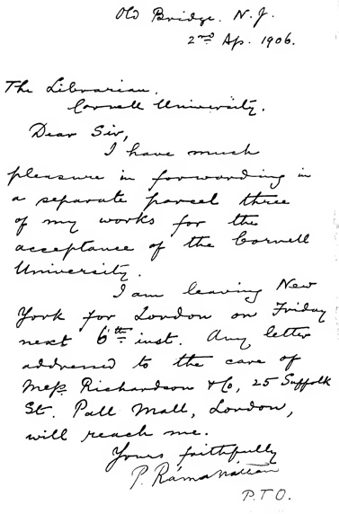
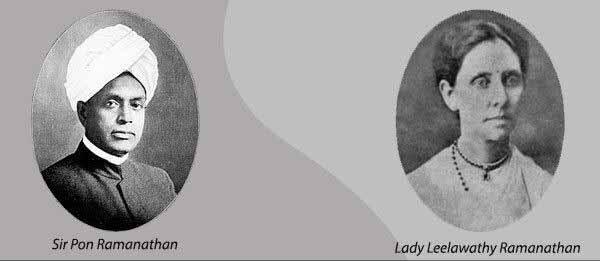
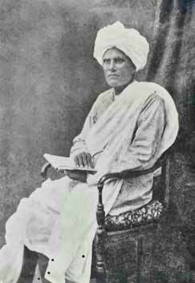
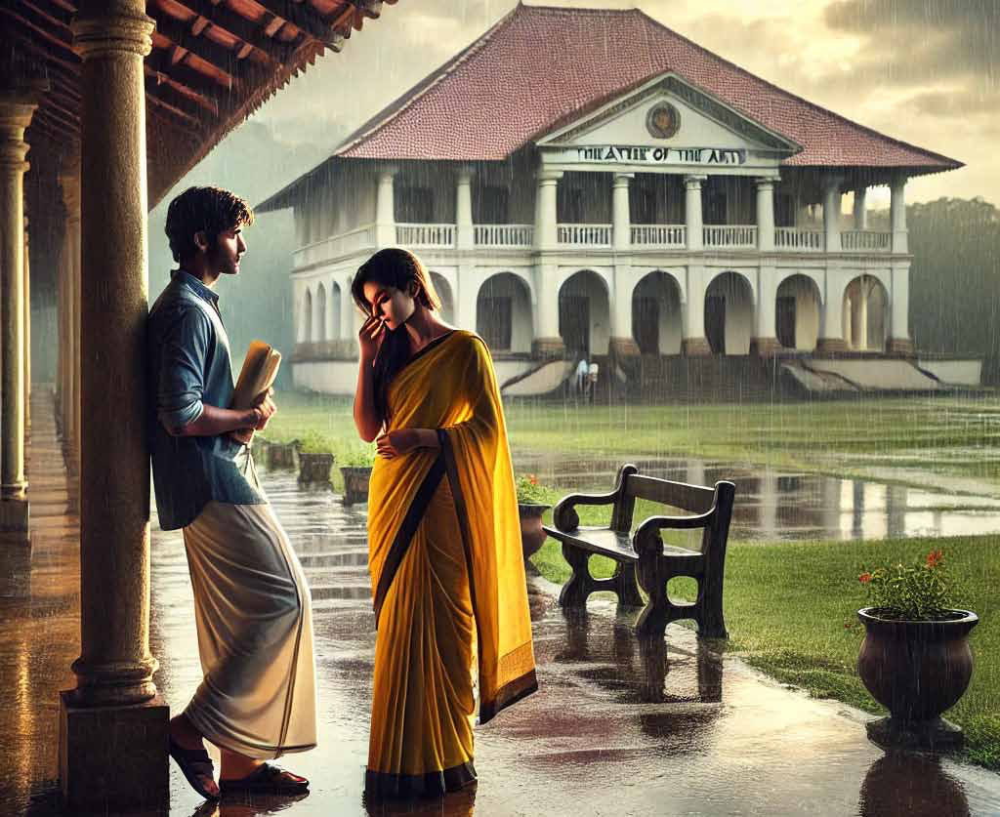
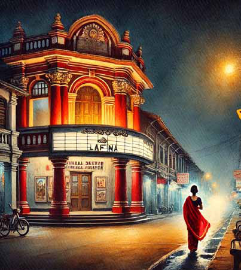
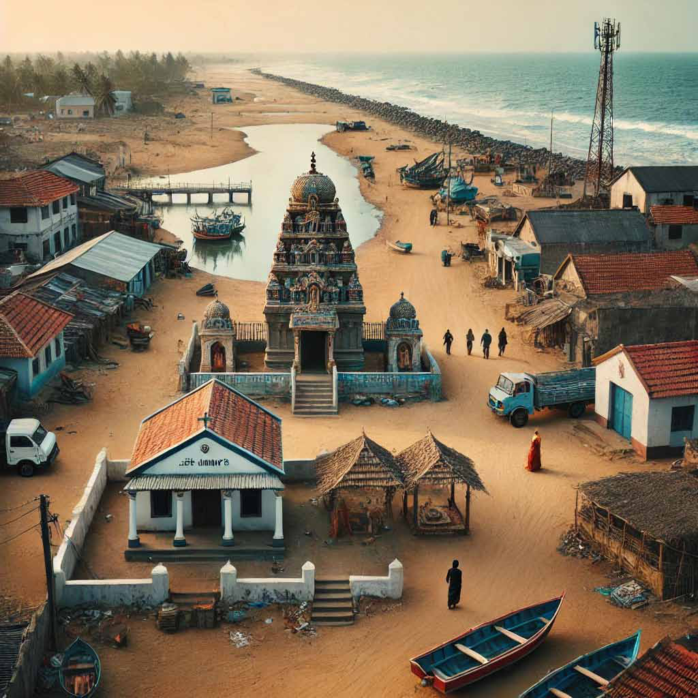

Sri Parananda Yogi, also known as
Sri Parananda Yogi, also known as
Jaffna Monitor hellojaffnamonitor@gmail.com 48 D uring his later years, Sir Pon Ramanathan became deeply involved in Shaiva religious activities. He began to use the name 'Sri Parananda.' Despite engaging in meditation, religious teachings, and building and reforming Shaiva temples, he did not stop his research, explorations, and writing. Under the name Sri Parananda Yogi, he taught yoga and meditation. One of the people who learned yoga from him was Allan Bennett.1 1 In 1900, Sir Henry Allan Bennett (1872-1923) traveled to East Asia to treat asthma. Upon arriving in Sri Lanka, he developed an interest in Buddhism. He had worked under Sir Ponnambalam Ramanathan and learned about yoga and meditation. Bennett later shared these learnings with his friend Aleister Crow- ley. Crowley subsequently gained fame as a magician. Ananda Coomaraswamy, Sir Ponnambalam Ramana- than's brother-in-law, was involved in a well-known divorce from his wife, Ratan Devi. Bennett eventually In 1898, he published a 342-page book titled 'An Eastern Exposition of the Gospel of Jesus According to St. Matthew,' and in 1902, another 332-page book titled 'An Eastern Exposition of the Gospel of Jesus According to St. John.' These two books are considered the first comprehensive commentaries on the became a Buddhist monk, adopting the name Ananda Metteyya. As the first Briton to do so, he is considered a pioneer in bringing Theravada Buddhism to Eng- land. By: Sarawanan Komathi Nadarasa Sri Parananda Yogi, also known as Sir Pon Ramanathan


Jaffna Monitor hellojaffnamonitor@gmail.com 49 Bible to be published in an Asian country.2 In addition to these, he submitted several other works on the Bible to an American university.3 Although some of these were prepared for publication, they were never released.4 The extent to which university scholars in America celebrated these two books during his visit to the United States is documented in the biography of Sir Pon Ramanathan, compiled by M. Vaithilingam. He did not publish these two English books on Christianity under his own name but under the name 'Sri Parananda.' The publisher, KEGAN PAUL, TRENCH, TRUBNER & CO. Ltd., based in London, released the books. These works have not been translated into Tamil.5 Both books were edited by R.L. 2 Jesus in Asia By R. S. Sugirtharajah – Havard Univer- sity press – 2018 – P-68 3 The Spirit of the East Contrasted with the Spirit of the West (1905), The Culture of the Soul among West- ern Nations (1906) 4 The Exposition of the Psalms of David (I-XXX) Ac- cording to Jnana Yoga; Lectures on the Sermon on the Mount; and Lectures on the Doctrine of the Resurrec- tion of the Dead, Being a Commentary on the XVth Chapter of the First Epistle of Paul to the Corinthians. 5 She arrived in Sri Lanka from Australia seeking spiritual enlightenment. Subsequently, she became Ramanathan's private secretary. Following the death of his first wife, Sir Ponnambalam Ramanathan married Ms. Harrison, who later adopted the name Leelavathi. Harrison. The cover of the book on Matthew bears the inscription, 'From the Light of the Experience of God by Sri Parananda.' He used the name Parananda only as a pseudonym for these books and was not known as Parananda Yogi by anyone. Why did he use this name only for his Christian exegesis? Even when he translated and published the Hindu scripture Bhagavad Gita in 1914, he used his real name. These mysteries remain to be unravelled. Ramanathan's Letter I recently searched for and obtained the digital version of these two books. It is clear that the book belonged to Ramanathan. Inside is a handwritten letter by him addressed to Mr. Bridge. The letter, dated 02.09.1906 and addressed to the librarian at Cornell University, mentions that he has sent three of his research works for the university's approval. He also notes that he will be departing from New York to London on the 6th, providing a London address for correspondence. As president of the Saiva Mangaiyar Sabha, founded by Sir Ponnambalam Ramanathan, Leelavathi Ammaiyar engaged in significant public service. In recognition of his literary contributions, the University of Ceylon awarded Sir Ponnambalam Ramanathan an honorary Doctor of Laws degree.

Jaffna Monitor hellojaffnamonitor@gmail.com 50 At the end of the letter, he added a postscript (P.S.) stating, 'My full name is Ponnambalam Ramanathan,' suggesting that he sent this book to a new acquaintance unfamiliar with him. This could explain why he signed his name as 'P. Ramanathan' in English under the printed name 'Sri Parananda' on the book's cover. Later, I found additional references to this in M. Vaithilingam's book. It mentions that during his visit to America, Ramanathan participated in the inaugural events of the U.S. Congress in Washington, D.C. While there, he discovered collections of his legal writings in a library. The librarian expressed a desire to obtain copies of his other books as well, and Ramanathan promised to send them upon his return to Sri Lanka. However, for this article, it was found that the book with Ramanathan's handwritten note had indeed been sent to Cornell University. It is possible that he might have sent copies separately to Congress as well.


Jaffna Monitor hellojaffnamonitor@gmail.com 51 I downloaded both of these books for this article from the website https://archive. org. When I searched for who had uploaded these books, I discovered that it was the Cornell University Library. Among the over 76,000 books uploaded by this university on the Archive website, 77 are related to Sri Lanka, including the legal books compiled by Ramanathan. The Parananda Secret The content of these two books is essential for study in Tamil because Ramanathan's extensive research goes beyond biblical studies. It is clear that he analyzed these topics through the lens of the Saiva Siddhanta traditions he had learned. Ignoring these books would be a significant oversight for anyone attempting to study Ramanathan's Tamil-Saiva-Vellalar identity. His writings on Christian topics may have been influenced by Navalar, who played a pioneering role in introducing him to politics. We are already aware of Navalar's involvement in translating the Bible into Tamil. In the aforementioned book on "St. John," Ramanathan also mentions a publication titled "Mystery of Godliness," which he wrote in 1895.6 The last page of this book lists the addresses of sales agents in the United States, Australia, India, and Sri Lanka. Moreover, the preface to this book was not written by Ramanathan, who used the name Sri Parananda. Instead, it was written by his wife, Mrs. Harrison, who compiled the book. The preface is dated 'Good Friday, 1902,' and spans five pages. It's noteworthy that the preface for the earlier mentioned book on St. Matthew, published four years earlier, was also written by Mrs. Harrison, but it was a brief six- line paragraph on a single page. It is both surprising and intriguing why Sri Parananda, or Ramanathan, did not write the prefaces for these two books. Apart from the cover, his name does not appear anywhere inside the books. Ramanathan authored and compiled numerous books, most of which were primarily written for English readers. However, there are still some lingering scholarly doubts about whether all these works were indeed written by him. Two years ago, at a book launch event in Oslo, 6 “An Eastern Exposition of the Gospel of Jesus Ac- cording to St. John” – by Sri Parananda (Author), R. L. Harrison (Editor) - Kegan Paul, Trench, Trubner & CO. Ltd - 1902 - p70

Jaffna Monitor hellojaffnamonitor@gmail.com 52 I recall historian and professor Raghupathi mentioning, in response to one of my comments, that some of the books attributed to Sir Pon Ramanathan were not actually written by him. This is a point worth noting, and I have often wondered if this information could be true. When exploring the origins of the name 'Parananda,' it becomes evident that Ramanathan's spiritual teacher was Sri La Sri Arul Parananda Desikar (also known as Arulparananda Swamigal). Both Ramanathan and his brother Arunachalam studied religion, philosophy, meditation, and yoga under Arul Parananda Desikar. Sir Pon Ramanathan's spiritual mentor, Arul Parananda Swamigal, was a Brahmin from Thanjavur. It was after meeting Arul Parananda that Ramanathan began to immerse himself deeply in Saiva Siddhanta and spiritual matters, shifting away from his earlier focus on politics and social issues.7 Parananda Desikar was the spiritual guru to both Ramanathan and his brother.8 In 1930, S. Ponnambala Pillai wrote a historical account of Ramanathan titled 'Sri Ramanatha Maniyam' in poetic form, consisting of over a thousand verses. This work was written and published shortly after Ramanathan's death in the same year. The book also includes a photograph of Arul Parananda Desikar. Additionally, in the 331st verse of the book, S. Ponnambala Pillai did not forget to record the 7 Jesus in Asia By R. S. Sugirtharajah – Havard Univer- sity press – 2018 – P-67,68 8 The life of Sir Ponnambalam Ramanathan, Volume 1, M. Vythilingam, Ramanathan Commemoration Society, 1971 contributions of Arul Parananda Desikar. Sivakamisundari, Ramanathan's daughter, married Subbiah Nadesan, the grandson of Arul Parananda Desikar. Ramanathan received his early education at Royal College, Colombo, under the guidance of Dr. Boake. He pursued further studies in Chennai under the mentorship of Dr. Thompson and C.V. Thamotharampillai. He studied law under Sir Richard Morgan and learned the intricacies of politics from his father-in-law, Sir Muthu Coomaraswamy. Additionally, he gained knowledge of spiritual matters from Arul Parananda Swamigal.9 The Bhagavad Gita, translated from Sanskrit by Sir Pon Ramanathan (referred to as 'P. Ramanatha Thurai'), was published in 1914 at the Jaffna-Navalar Press. This rare and significant book features a preface written in Sanskrit by Srimath M. Sarveswara Sarma, which is quite remarkable. On one hand, Ramanathan had conflicts with Muslims, and on the other, he promoted Saiva activities, building Saiva schools and temples while also upholding Sanskrit. While he was deeply involved in Saiva religious writings, he also engaged in Christian studies. To fully understand the Vaishnava background behind his Tamil-Jaffna-Saiva-Vellalar- educated-upper-class-patriarchal politics, it is essential to also understand Sri Parananda Yogi. 9 ibid

Jaffna Monitor hellojaffnamonitor@gmail.com 53 Story Translated from the original Tamil short story mauṉa kītam (nksd fPjk;) ffrom the 1976 collection of short stories titled kōṭukaḷum kōlaṅkalum (NfhLfSk; Nfhyq;fSk;) by Kuppilan Ai. Shanmugan Translated by: Eḻuttukkiṉiyavaṉ (vOj;Jf;fpdpatd;) T he ceiling fans are spinning fast. Their shadows from the yellow light of the electric bulbs move like dark monsters. In that hauntingly beautiful setting, I stare past the closed glass window, transcending the chatter of my co-workers, losing myself in the feeling that a nameless emotion was rising up from the depths of my heart as a bewitchingly charming silent ballad. Silent Ballad
Jaffna Monitor hellojaffnamonitor@gmail.com 54 Beyond the snaking road, one can see the uneven silhouette of tiled roofs. The tower of the Pillaiyār temple and the cross on St. Mary’s church stand in attention next to each other in the northeast corner as if they were delivering a philosophical sermon. Further away, those three flags on the harbor flagpole flutter in the wind. The green leaves on the lone coconut tree towering above the tiled roofs sway in the wind. The flag poles on the ships in the harbor peek above the tiled rooftops. The silent ballad titillates my heart. Like when one hears the rare sound of the violin in musical concerts that melts the heart, like all the musical energy entwined together into a lament, like a pure innocent damsel whimpering in a soft voice… I keep looking outside. A bevy of clouds envelop the earth into semi darkness. A light drizzle persists. At a distance, a movie theater’s name glitters in its
Jaffna Monitor hellojaffnamonitor@gmail.com 55 red light. A middle-aged woman in a red sari, drawn up to cover her head, hurries along the road that curves out of sight. I close my eyes to look within. My heart yearns for something. As if I am weary of this mundane existence, as if I am overcome with an urge to renounce this worldly life, as if I am being told to accept it with a smile if I suddenly encountered death… as if green, red, blue, and yellow hues swirl into one,... as if there is some connection between the silent ballad and the swirling hues, as if the silent ballad turns into a shade of yellow… aiyō! I open my eyes. The world lies sprawled beyond the window with its exquisite beauty. A drizzle is falling on the world half-immersed in darkness. The world outside resembles the description of the setting in the biography of the scientist Louis Pasteur, when he first left home for college on a coach. He held fast to his ideals and left, even as nature wept. He became a scientist. But I …? Am I weeping with nature? Do suffering souls weep? Then, is the world immersed in suffering? Am I suffering? If so, is suffering charming? Is it bewitching? Will it lead to an indescribable yearning? Finally, finally … will it lead to peace and joy? If nature weeps, will the world thrive afterwards?

Jaffna Monitor hellojaffnamonitor@gmail.com 56 Suddenly there is lightning; The world shines brilliantly and then darkens; Darkness; light; suffering – bliss; storm – calm; green – red — blue – yellow; One is not without the other. Does one depend on the other? I weep; I laugh; I suffer; I rejoice. Life! Darkness; light; suffering; joy. The bell from St. Mary’s church rings, ripping open the silence of silences. The sound pervades everywhere, buzzing. Buzzing, buzzing, buzzing… as if the sound sweetens my ears. I hear the silent ballad blending with a wondrous melody. My eyes moisten. Just like the sadness resulting from the seaside ballads rendered by Kōvalaṉ and Kaṇṇaki in the Tamil epic cilappatikāram, for me… for me … I closed my eyes again.
Jaffna Monitor hellojaffnamonitor@gmail.com 57 With a showy gait, swinging her arms that say, ‘I am fearless, no matter what happens,’ she arrives and smiles. Once upon a time, she entered my life’s journey and took a permanent place in it. There is surely some connection between her, the yellow hue, and the silent ballad. It was a day just like this … On a quiet, beautiful, drizzly day overcast with heart-wrenching clouds, I took refuge from the drizzle under the roofed porch in front of the Theatre of the Arts at the university and waited for my bus. She, too, was waiting. She stood like a statue wearing a yellow sari, her golden yellow skin shimmering. Her yellow form shone like a flame in my eyes. She stood murmuring a sad song, like a creeper leaning against its support. Seconds dissolved. Minutes dissolved. Hours were born. Eyes met. The bus arrived; we both boarded the bus. She climbed on board after me. I bought tickets for both of us. She smiled and softly said “thank you.” I responded, “You are welcome.” That was the first encounter. Her form was engraved in my mind. She smiles in my mind's eye like a glittering yellow flame. The melody of that soft, sad, movie song as a silent ballad… How many bewitching experiences in life! Then… Then what? She and I became a couple. We blended into each other – and became one. I trawl the bottom of my heart numbed by the sadness from the silent ballad. We lived in our oneness. A magical life without sorrows or suffering – a life which made it impossible to imagine a greater paradise. Mountain slopes draped in greenery, mountain streams gently rippling through, twisting and turning, trees bedecked with a riot of flowers, earth covered with lush meadows. The multi- floor library that stands as the repository of knowledge. Lecture halls. She and I were inseparable everywhere, inseparable, inseparable, … I daresay, “Life is when a man and a woman blend into one. Renouncing life is a lie. Literature that nudges one to hate life are lies. The argument that ‘Life is an illusion’ is a lie. Life is the truth. Truth is life. It is paradise. Just like the contrasts in hues, yellow–red– blue-green, life is a blend of happiness- suffering–sorrow-joy.”

Jaffna Monitor hellojaffnamonitor@gmail.com 58 They were great experiences.. For a man and a woman to join, one need not look for compatibility in tribes, castes, beauty, or horoscopes; one only needs love. Love is tribe, love is beauty, love is compatibility. I loved her. She loved me. We joined together; we became tight. I am not handsome. She is a beauty. She said I was handsome in her eyes; That there was none more handsome. I laughed. I understood what love is. I keep my eyes closed. That silent ballad is somehow affecting me. One day … … She and I had a tiff. I was in the library, reading a book by the English poet Keats. She came to beseech and beg. I did not budge. She sat next to me and

Jaffna Monitor hellojaffnamonitor@gmail.com 59 mumbled, like all the musical energies joined in a soft, sad song… I forgot myself and tried to embrace her. She laughed, her voice tinkles like a brass bell. As far as I was concerned, she was a musical genius, a lover of the arts. Countless were the wonderful scenes of nature that she pointed out to me, describing their beauty. The mountain peaks north of the road, covered in mist, the mountain streams that shimmer like marble in the soft light of the morning sun, dew drops that glitter on the tips of blades of grass, leafless flower trees brimming with flowers, birds that fly in pairs in the dark silent sky… We watched these scenes together, in our solitude. We forgot ourselves, engrossed in those scenes; we found joy in looking for our own meaning in them. She would say, “You are an artist.” My friends would say, “Instead of using your creative talent to describe the suffering and life struggles in our society, you lose yourself in describing unimportant topics like nature, love, and individual human emotions.” She would praise that my stories and poems were exquisite. I would report my friends’ criticisms. She would point to the birds flying overhead, and ask, “Do they not have life struggles? Hunger? How do they joyfully sing their birdsongs, and rejoice in nature?” She would say that life struggles persist as long as life persists. “It is only through the fine arts that we can forget ourselves and feel true joy,” she would declare. I would nod in agreement. In complete agreement. When it came to life, art, and literature, we were of the same mind. Perhaps it was because of this that we could lose ourselves into completely becoming one. For a man and a woman to become one, love alone is not enough. Their minds need to be aligned, too. True life is the joining of two minds, blending emotions, and, hence blending souls. I thought deeply about human feelings, the social contexts, and their effects, and wrote a poem. In that poem, titled ‘Life’s breath,’ I ended with the assertion, “Life is a collection of dreams.” She saw that poem. Her eyes shone in bliss. “Life is a mass of dreams,” she said in Tamil first, and then translated the sentence into English, jumping with joy. She went overboard praising me. “I did not write this poem by myself alone; you too became one with me and we wrote it together; this poem is nothing but my experience in blending with you.” She blushed and smiled. For some reason, I remembered our first meeting, with the melody of the sad ballad and the yellow hue. I remain with my eyes closed. I can hear the whirring of the ceiling fans. From the perspective of the corporeal eyes of this world, we did part ways. The world was immersed in semi-darkness then. It was drizzling. She was wearing a yellow sari and mumbled that sad song. The train arrived, belching out thick black smoke. I was the one who bid her farewell. She did not cry, nor did I. There was no reason for us to cry. Why should we cry? We do not suffer. Even if we did, is there some law that says we must cry? I did indeed cry once. She did, too. After our first encounter in the bus, when she and I met at the park – when I understood her and she
Jaffna Monitor hellojaffnamonitor@gmail.com 60 understood me – when she and I became one – we did cry then. For some reason, we felt the urge to cry. We cried until that urge was quenched. Everyone says that we have broken up. But I do not believe that. We did not break up. No one can break us up. We are eternal lovers. She is within me and I would be within her; I would certainly be. When we realized that we could not be together in this mundane earthly life – when we realized that we could not overcome the societal barriers, we did not launch a revolution against society. We are not revolutionaries. We are artists… She then said, “We will live together forever. Only you will live in my heart forever; society is not capable of taking revenge on us. My soul will always seek yours. Society can do what it wants with my body. As long as I am alive, in some corner of this world, I will live as a faithful wife to you in my mind.” My understanding of her was complete. Tears ran down my cheeks. In the overt external life, she is wife to someone else. But in truth, she will remain my wife forever. I will remain her husband; the half-darkness that shrouds this world, the drizzle, the yellow hue, the silent ballad… “Thambi, have you fallen asleep?” A voice calls out. I open my eyes. The clock is at half past four. I stare through the window. It is drizzling. The world lies sprawled. The silent ballad plays in my heart. Green, red, blue, yellow …